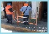

Hola!, bienvenido a la pagina para llevar el control de documentos para factibilidades, servicios nuevos, reaperturas y servicios varios; Cajamarca y servicios menores.
¿Por que utilizar esta web? |
Como mejora al proceso de atencion al cliente se esta implementando esta web, de esta manera lo que se busca es agilizar el tramite del cliente y tener una alternativa de manejo de la documentacion de forma virtual, minimizando el consumo de papel; mostrando nuestro compromiso al publico y al medio ambiente.
Informe de reclamos
No atencion de servicio nuevo
Demora en atencion de averias
Otros
|
|
presiona para ir a distriluz hidrandina -
ver su suministro hidrandina -
requisitos para nuevo suministro
|